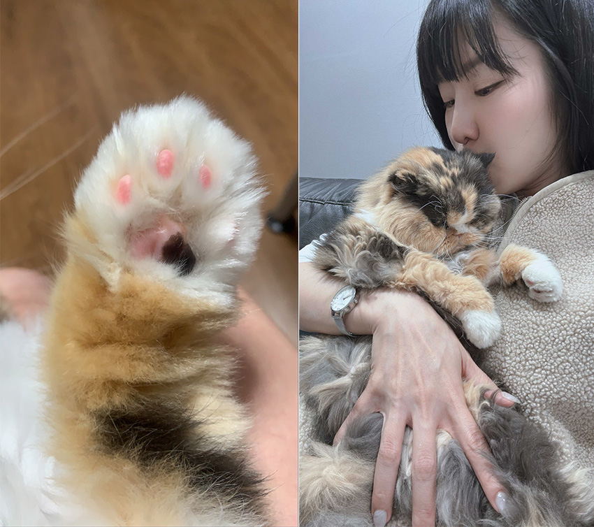

依依不捨—阿絨
胡伊婷│企業產品硬體工程一處＼系統設計部
阿絨：
這段日子辛苦你了，從兩週前住院吊點滴到輸血，看著你瘦小的身軀在更小的籠子裡，窩在是廁所的貓砂盆上，我捨不得，但又自私地希望你在治療後能恢復健康，讓你受苦了！出院後每天要吃 5-6 顆藥，兩天打一次皮下，一開始你還有力氣用小手手想拍開餵藥器，後來也漸漸沒了力氣，除了難過，也只能努力做好可能會失去你的心理準備。
但當失去你的這一刻，還是哭到泣不成聲，你先是睡著了，下一針，停止了呼吸，即便原本就已經很微弱的呼吸起伏，在停止後，我仍感受到已經失去你了。
「要常常回來看我喔！不然我會很想你」是和你最後的約定。
12 個年頭的陪伴，已經習慣回家後有你，習慣早上有關不掉的懶人鬧鐘，現在不知道要再花多久時間習慣沒有你的每一天。永遠記得初次相遇，在貓咪認養會上，你扁扁的臉和大大的眼睛騙到了我，甘願為了你踏上貓奴這條路。如今可以放下這個責任，而你也放下了病痛。
謝謝你這幾年帶給我的快樂和美好回憶，希望你在另一個世界一切都好，能和在世時一樣幸福，永遠愛你。
 |